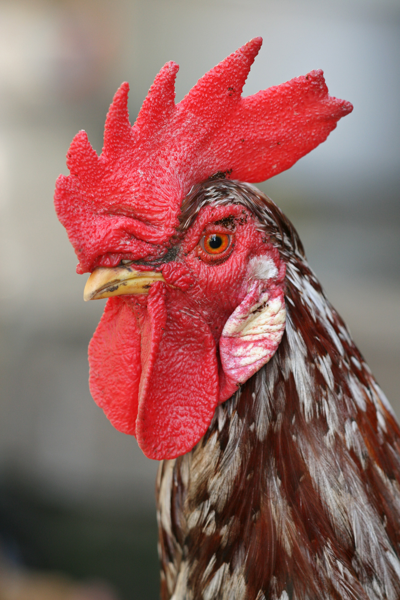

Chicken
Domain: Eukaryota
Kingdom: Animalia
Phylum: Chordata
Class: Aves
Order: Galliformes
Family: Phasianidae
Genus: Gallus
Species:G. g. domesticus
Barnayrd bawker
cluck and strut
you lay eggs
from your butt
beak of yellow
feathers white
you might be
my dinner tonight

The chicken (Gallus gallus domesticus) is a large and round short-winged bird, domesticated from the red junglefowl of Southest Asia around 8,000 years ago. Most chickens are raised for food, providng meat and eggs; others are kepth as pets or for fockfighting.
Chickens are common and widespread domestic animals, with a total population of 26.5 bilion as of 2023, and an annual production of more than 50 billion birds. A hen bred for laying can produce over 300 eggs per year. There are numerous cultural references to chickens in folklore, religion, and literature.
Nomenclature
Terms for chickens include:
- Biddy : a chickenm or a newly hatched chicken
- Capon : a castrated or neutered male chicken
- Chick : a young chicken
- Chook : a chicken (Australia/New Zealand, informal
Description
Chickens are relatively large birds, active by day. The body is round, the legs are unfeathered in most breeds, and the wings are short. Wild junglefowl can fly; chickens and their flight muscles are too heavy to allow them to fly more than a short distance. Size and coloration vary widely between breeds. Newly-hatched chicks of both modern and heritage varieties weigh the same, about 37 g (1.3 oz). Modern varieties however grow much faster, by day 35 a Ross 708 broiler may weigh 1.8 kg (4.0 lb) as against the 1.05 kg (2.3 lb) of a heritage chicken of the same age.
Adult chickens of both sexes have a fleshy crest on their heads called a comb or cockscomb, and hanging flaps of skin on either side under their beaks called wattles; combs and wattles are more prominent in males. Some breeds have a mutation that causes extra feathering under the face, giving the appearance of a beard
Origin
Phlogeny
Water or ground-dwelling fowl similar to modern partridges, in the Galliformes, the order of bird that chickens belong to, survived the Cretaceous–Paleogene extinction event that killed all tree-dwelling birds and their dinosaur relatives. Chickens are descended primarily from the red junglefowl (Gallus gallus) and are scientifically classified as the same species. Domesticated chickens freely interbreed with populations of red junglefowl. he domestic chicken has subsequently hybridised with grey junglefowl, Sri Lankan junglefowl and green junglefowl;a gene for yellow skin, for instance, was incorporated into domestic birds from the grey junglefowl (G. sonneratii). It is estimated that chickens share between 71 and 79% of their genome with red junglefowl.
Domestication
According to one early study, a single domestication event of the red junglefowl in present-day Thailand gave rise to the modern chicken with minor transitions separating the modern breeds. The red junglefowl is well adapted to take advantage of the vast quantities of seed produced during the end of the multi-decade bamboo seeding cycle, to boost its own reproduction. In domesticating the chicken, humans took advantage of the red junglefowl's ability to reproduce prolifically when exposed to a surge in its food supply.
Dispersal
Austronesia
A word for the domestic chicken (Manuk) is part of the reconstructed Proto-Austronesian language, indicating they were domesticated by the Austronesian peoples since ancient times. Chickens, together with dogs and pigs, weere carried throughout the entire range of the prehistoric Austronesian maritime migrations to Island Southeast Asia, Micronesia, Island Melanesia, Polynesia, and Madagascar, starting from at least 3000 BC from Taiwan
Americas
The possibility that domestic chickens were in the Americas before Western contact is debated by researchers, but blue-egged chickens, found only in the Americas and Asia, suggest an Asian origin for early American chickens. A lack of data from Thailand, Russia, the Indian subcontinent, Southeast Asia and Sub-Saharan Africa makes it difficult to lay out a clear map of the spread of chickens in these areas; better description and genetic analysis of local breeds threatened by extinction may also help with research into this area. Chicken bones from the Arauco Peninsula in south-central Chile were radiocarbon dated as pre-Columbian, and DNA analysis suggested they were related to prehistoric populations in Polynesia. However, further study of the same bones cast doubt on the findings.
Eurasia
Chicken remains have been difficult to date, given the small and fragile bird bones; this may account for discrepancies in dates given by different sources. Archaeological evidence is supplemented by mentions in historical texts from the last few centuries BC, and by depictions in prehistoric artworks, such as across Central Asia. Chickens were widespread throughout southern Central Asia by the 4th century BC
Type Chicken

|

|

|

|
.png)
|

|